|
.
|
Goldeneye
: Debug Mode |
|
|
Goldeneye
: Debug Mode |
|
81036F6C0000 |
 |
Ce Code est une petite merveille. Pour l'activer, voilà comment il faut faire. Entrez le Code dans votre Gameshark. Lancez le Jeu, et une fois dans le Jeu, appuyez sur C-Haut et C-Bas en même temps. Là, 8 Colonnes de texte vont apparaître par dessus l'écran de Jeu. Choisissez les Paramètres parmi la Liste avec la Croix Directionnelle. Appuyez sur Start pour valider vos choix. |
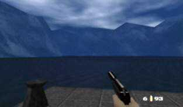 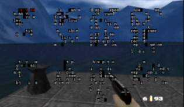 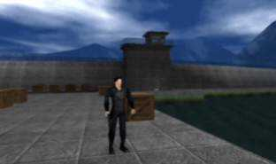 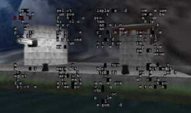
Choisissez
Move View et promenez-vous ou voulez hors de votre
corps !

Faites réapparaitre les Textes, et hop ! Vous voilà revenu dans
votre corps de James Bond !

Signification
des Textes Bizarroides. Ceux en rouge sont On / Off au choix.
|
Move View
|
Sortir du Corps de Bond et se promener un peu partout... |
|
Bond
|
Normal |
|
Collisions
|
Passer à travers les Objets / Portes. |
|
Max
Ammo
|
Munitions au Maximum ( PAS infinies ) |
|
Bond Die
|
Vous mourrez ! |
|
Play Title
|
Quitter le Niveau |
|
Invincible
|
Etre Invincible. |
|
Visible
|
Etre invisible. |
|
All
Guns
|
Toutes les Armes. |
|
Display
Speed
|
Des bandes rouges bizarres à l'ecran... |
|
Background
|
Enlever tout les décors sauf les Portes. |
|
Objectives
|
Pour avoir tous les Objectifs completés. |
|
Fast
|
Turbo On / Off |
|
Testing Man
Positions
|
Indique vos coordonées ( Room, X, Y, Z, N ) |
|
Vice CVC
|
Line Mode |
Ce qui est intéressant avec ce Debug Mode, c'est que c'est une bonne alternative aux autres codes genre Moon-Jump, Passe-Muraille, Niveaux en Plus, Cinématiques où l'on ne peut pas faire TOUT ce que l'on veut. Ci-dessous, des Tonnes de Photos faites avec ce Code ! Pour commencer, Archives ! On peut voir à quoi ressemble le mur derrière les fenêtres de la Salle d'Interrogatoire: juste un gros Bitmap avec une texture de Briques. Photo d'après, la Cour vue de plus Haut. Et si on allait voir les Bâtiments derrière la Palissade ? |

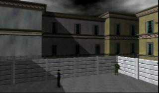

Si on allait dans les Cavernes Souterraines ? Sur la Première Image, voici la Grande Salle avec l'Escalier en Spirale... vu de loin ! Sur la Deuxième Image j'ai fait un cadrage pour voir la lumière de près avec l'entrée et les vitres au fond. |


Ci-dessous,
le seul endroit invisitable : la Salle du Tuyau avec les Drone Guns.
On ne peut pas aller plus loin sinon c'est tout noir. Sur la Deuxième
photo, j'ai déliré avec un Garde chassant une mouche... |
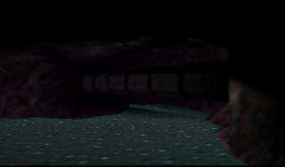

Control
! Quand on est "dans" les Amas de Caisses, forcément
quand on tire ça ne sort pas et çà fait un Bruit
Métallique. D'ailleurs sur la photo, on voit l'impact alors
qu'il n'y a "rien" devant moi ! La Deuxième image
vous montre la Salle de Controle vu depuis derrière l'écran
! |


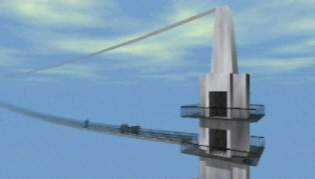

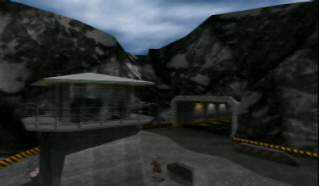


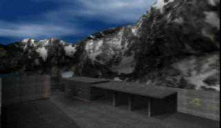
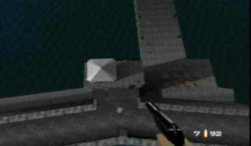
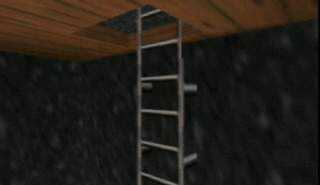
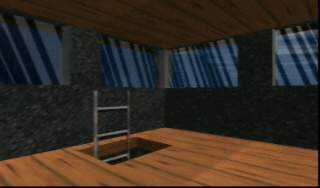
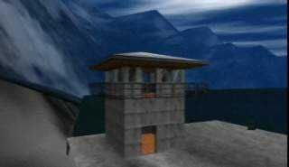
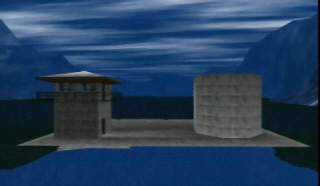
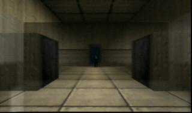

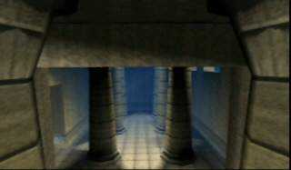
Ci-dessous,
une Vue depuis une Tourelle de Sniper (inaccessible) dans la Jungle.
Après, 3 Images rigolotes. Deuxième image, Natalya s'en
prend à Xenia. Troisième et quatrième image,
quand vous sortez de votre corps, Natalya vous prend pour un ennemi
et s'acharne sur vous ! |
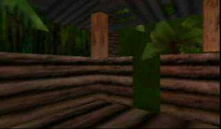

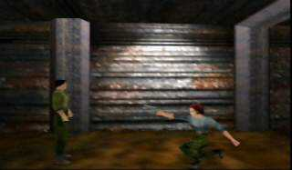
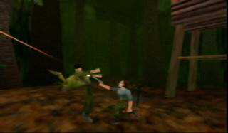
Ci-dessous,
Runway ! Intéressons-nous au Gros Bâtiment derrière
vous, autrement dit Facility ! Mais vu de l'extérieur... Un
coup de Moon-Jump, un coup de Debug, et hop par ici les Belles Images
qu'on ne voit pratiquement pas à cause de la brume ! |
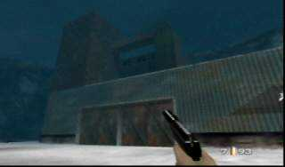
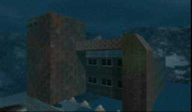
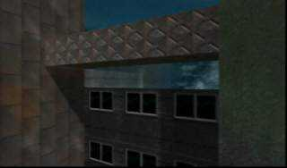


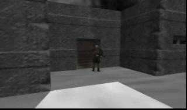
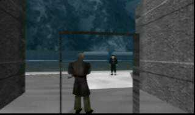
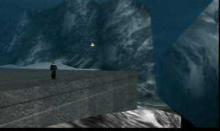
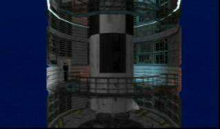
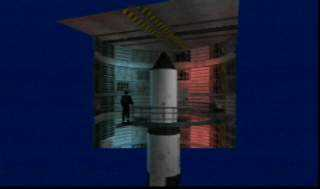
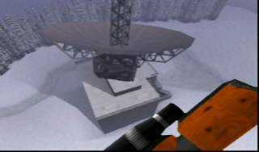

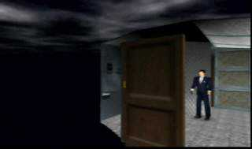
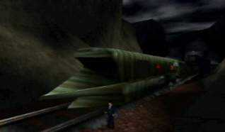